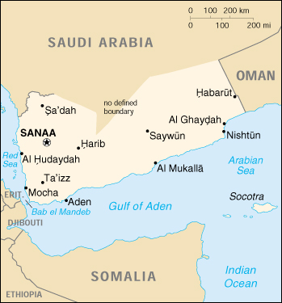

{kind=link}


| Yemen |
|
|  | |
| Introduction |
Background: North Yemen became independent of the Ottoman Empire in 1918. The British, who had set up a protectorate area around the southern port of Aden in the 19th century, withdrew in 1967 from what became South Yemen. Three years later, the southern government adopted a Marxist orientation. The massive exodus of hundreds of thousands of Yemenis from the south to the north contributed to two decades of hostility between the states. The two countries were formally unified as the Republic of Yemen in 1990. A southern secessionist movement in 1994 was quickly subdued.
| Geography |
Location: Middle East, bordering the Arabian Sea, Gulf of Aden, and Red Sea, between Oman and Saudi Arabia
Geographic coordinates: 15 00 N, 48 00 E
Map references: Middle East
Area:
total:
527,970 sq km
land:
527,970 sq km
water:
0 sq km
note:
includes Perim, Socotra, the former Yemen Arab Republic (YAR or North Yemen), and the former People's Democratic Republic of Yemen (PDRY or South Yemen)
Area - comparative: slightly larger than twice the size of Wyoming
Land boundaries:
total:
1,746 km
border countries:
Oman 288 km, Saudi Arabia 1,458 km
Coastline: 1,906 km
Maritime claims:
contiguous zone:
18 nm in the North; 24 nm in the South
continental shelf:
200 nm or to the edge of the continental margin
exclusive economic zone:
200 nm
territorial sea:
12 nm
Climate: mostly desert; hot and humid along west coast; temperate in western mountains affected by seasonal monsoon; extraordinarily hot, dry, harsh desert in east
Terrain: narrow coastal plain backed by flat-topped hills and rugged mountains; dissected upland desert plains in center slope into the desert interior of the Arabian Peninsula
Elevation extremes:
lowest point:
Arabian Sea 0 m
highest point:
Jabal an Nabi Shu'ayb 3,760 m
Natural resources: petroleum, fish, rock salt, marble, small deposits of coal, gold, lead, nickel, and copper, fertile soil in west
Land use:
arable land:
3%
permanent crops:
0%
permanent pastures:
30%
forests and woodland:
4%
other:
63% (1993 est.)
Irrigated land: 3,600 sq km (1993 est.)
Natural hazards: sandstorms and dust storms in summer
Environment - current issues: very limited natural fresh water resources; inadequate supplies of potable water; overgrazing; soil erosion; desertification
Environment - international agreements:
party to:
Biodiversity, Climate Change, Desertification, Endangered Species, Environmental Modification, Hazardous Wastes, Law of the Sea, Nuclear Test Ban, Ozone Layer Protection
signed, but not ratified:
none of the selected agreements
Geography - note: strategic location on Bab el Mandeb, the strait linking the Red Sea and the Gulf of Aden, one of world's most active shipping lanes
| People |
Population: 17,479,206 (July 2000 est.)
Age structure:
0-14 years:
47% (male 4,220,621; female 4,076,902)
15-64 years:
49% (male 4,416,139; female 4,224,474)
65 years and over:
4% (male 275,590; female 265,480) (2000 est.)
Population growth rate: 3.36% (2000 est.)
Birth rate: 43.44 births/1,000 population (2000 est.)
Death rate: 9.86 deaths/1,000 population (2000 est.)
Net migration rate: 0 migrant(s)/1,000 population (2000 est.)
Sex ratio:
at birth:
1.05 male(s)/female
under 15 years:
1.04 male(s)/female
15-64 years:
1.05 male(s)/female
65 years and over:
1.04 male(s)/female
total population:
1.04 male(s)/female (2000 est.)
Infant mortality rate: 70.28 deaths/1,000 live births (2000 est.)
Life expectancy at birth:
total population:
59.83 years
male:
58.1 years
female:
61.64 years (2000 est.)
Total fertility rate: 7.05 children born/woman (2000 est.)
Nationality:
noun:
Yemeni(s)
adjective:
Yemeni
Ethnic groups: predominantly Arab; but also Afro-Arab, South Asians, Europeans
Religions: Muslim including Shaf'i (Sunni) and Zaydi (Shi'a), small numbers of Jewish, Christian, and Hindu
Languages: Arabic
Literacy:
definition:
age 15 and over can read and write
total population:
38%
male:
53%
female:
26% (1990 est.)
| Government |
Country name:
conventional long form:
Republic of Yemen
conventional short form:
Yemen
local long form:
Al Jumhuriyah al Yamaniyah
local short form:
Al Yaman
Data code: YM
Government type: republic
Capital: Sanaa
Administrative divisions:
17 governorates (muhafazat, singular - muhafazah); Abyan, 'Adan, Al Bayda', Al Hudaydah, Al Jawf, Al Mahrah, Al Mahwit, 'Ataq, Dhamar, Hadhramawt, Hajjah, Ibb, Lahij, Ma'rib, Sa'dah, San'a', Ta'izz
note:
there may be three new governorates - the capital city of Sanaa, Amran, Dala'a
Independence: 22 May 1990, Republic of Yemen was established with the merger of the Yemen Arab Republic [Yemen (Sanaa) or North Yemen] and the Marxist-dominated People's Democratic Republic of Yemen [Yemen (Aden) or South Yemen]; previously North Yemen had become independent on NA November 1918 (from the Ottoman Empire) and South Yemen had become independent on 30 November 1967 (from the UK)
National holiday: Proclamation of the Republic, 22 May (1990)
Constitution: 16 May 1991; amended 29 September 1994
Legal system: based on Islamic law, Turkish law, English common law, and local tribal customary law; does not accept compulsory ICJ jurisdiction
Suffrage: 18 years of age; universal
Executive branch:
chief of state:
President Lt. Gen. Ali Abdallah SALIH (since 22 May 1990, the former president of North Yemen, assumed office upon the merger of North and South Yemen); Vice President Maj. Gen. Abd al-Rab Mansur al-HADI (since 3 October 1994)
head of government:
Prime Minister Dr. Abd al-Karim Ali al-IRYANI (since NA April 1998)
cabinet:
Council of Ministers appointed by the president on the advice of the prime minister
elections:
president elected by direct, popular vote for a five-year term; election last held 23 September 1999 (next to be held NA 2004); vice president appointed by the president; prime minister and deputy prime ministers appointed by the president
election results:
Ali Abdallah SALIH elected president; percent of vote: Ali Abdallah SALIH 96.3%, Najeeb Qahtan AL-SHAABI 3.7%
Legislative branch:
unicameral House of Representatives (301 seats; members elected by popular vote to serve four-year terms)
elections:
last held 27 April 1997 (next to be held NA April 2001)
election results:
percent of vote by party - NA; seats by party - GPC 189, Islah 52, Nasserite Unionist Party 3, National Arab Socialist Baath Party 2, independents 54, election pending 1
note:
in May 1997, the president created a consultative council, sometimes referred to as the upper house of Parliament; its 59 members are all appointed by the president
Judicial branch: Supreme Court
Political parties and leaders:
there are over 12 political parties active in Yemen, some of the more prominent are: General People's Congress or GPC [President Ali Abdallah SALIH]; Islamic Reform Grouping or Islah [Shaykh Abdallah bin Husayn al-AHMAR]; National Arab Socialist Baath Party [Dr. Qassim SALAAM]; Nasserite Unionist Party [Abdel Malik al-MAKHLAFI]; Yemeni Socialist Party or YSP [Ali Salih MYQBIL]
note:
President SALIH's General People's Congress or GPC won a landslide victory in the April 1997 legislative election and no longer governs in coalition with Shaykh Abdallah bin Husayn al-AHMAR's Islamic Reform Grouping or Islah - the two parties had been in coalition since the end of the civil war in 1994; the YSP, a loyal opposition party, boycotted the April 1997 legislative election
International organization participation: ACC, AFESD, AL, AMF, CAEU, CCC, ESCWA, FAO, G-77, IAEA, IBRD, ICAO, ICRM, IDA, IDB, IFAD, IFC, IFRCS, ILO, IMF, IMO, Intelsat, Interpol, IOC, IOM, ITU, NAM, OAS (observer), OIC, OPCW, UN, UNCTAD, UNESCO, UNIDO, UPU, WFTU, WHO, WIPO, WMO, WToO, WTrO (applicant)
Diplomatic representation in the US:
chief of mission:
Ambassador Abd al-Wahhab Abdallah al-HAJRI
chancery:
Suite 705, 2600 Virginia Avenue NW, Washington, DC 20037
telephone:
[1] (202) 965-4760
FAX:
[1] (202) 337-2017
Diplomatic representation from the US:
chief of mission:
Ambassador Barbara K. BODINE
embassy:
Dhahr Himyar Zone, Sheraton Hotel District, Sanaa
mailing address:
P. O. Box 22347, Sanaa
telephone:
[967] (1) 238842
FAX:
[967] (1) 251563
Flag description: three equal horizontal bands of red (top), white, and black; similar to the flag of Syria which has two green stars and of Iraq which has three green stars (plus an Arabic inscription) in a horizontal line centered in the white band; also similar to the flag of Egypt which has a heraldic eagle centered in the white band
| Economy |
Economy - overview: Yemen, one of the poorest countries in the Arab world, reported strong growth in the mid-1990s with the onset of oil production, but was harmed by low oil prices in 1998. Yemen has embarked on an IMF-supported structural adjustment program designed to modernize and streamline the economy, which has led to foreign debt relief and restructuring. Aided by higher oil prices in 1999, Yemen worked to maintain tight control over spending and implement additional components of the IMF program. The high population growth rate of 3.4% and internal political dissension complicate the government's task.
GDP: purchasing power parity - $12.7 billion (1999 est.)
GDP - real growth rate: 4% (1999 est.)
GDP - per capita: purchasing power parity - $750 (1999 est.)
GDP - composition by sector:
agriculture:
20%
industry:
42%
services:
38% (1998)
Population below poverty line: NA%
Household income or consumption by percentage share:
lowest 10%:
2.3%
highest 10%:
30.8% (1992)
Inflation rate (consumer prices): 10% (1999 est.)
Labor force: NA
Labor force - by occupation: most people are employed in agriculture and herding or as expatriate laborers; services, construction, industry, and commerce account for less than one-half of the labor force
Unemployment rate: 30% (1995 est.)
Budget:
revenues:
$1.8 billion
expenditures:
$1.95 billion, including capital expenditures of $NA (1999 est.)
Industries: crude oil production and petroleum refining; small-scale production of cotton textiles and leather goods; food processing; handicrafts; small aluminum products factory; cement
Industrial production growth rate: NA%
Electricity - production: 2.24 billion kWh (1998)
Electricity - production by source:
fossil fuel:
100%
hydro:
0%
nuclear:
0%
other:
0% (1998)
Electricity - consumption: 2.083 billion kWh (1998)
Electricity - exports: 0 kWh (1998)
Electricity - imports: 0 kWh (1998)
Agriculture - products: grain, fruits, vegetables, qat (mildly narcotic shrub), coffee, cotton; dairy products, poultry, beef; fish
Exports: $2 billion (f.o.b., 1999 est.)
Exports - commodities: crude oil, cotton, coffee, dried and salted fish
Exports - partners: China 31%, South Korea 25%, Thailand 22%, Japan 5% (1998 est.)
Imports: $2.3 billion (f.o.b., 1999 est.)
Imports - commodities: food and live animals, machinery and equipment, manufactured goods
Imports - partners: US 9%, UAE 8%, France 8%, Italy 7%, Saudi Arabia 7% (1998 est.)
Debt - external: $4.5 billion (1999)
Economic aid - recipient: $176.1 million (1995)
Currency: Yemeni rial (YER) = 100 fils
Exchange rates: Yemeni rials (YER) per US$1 - 159.70 (January 2000), 160.700 (first quarter 1999), 135.882 (1998), 129.281 (1997), 94.157 (1996), 40.839 (1995)
Fiscal year: calendar year
| Communications |
Telephones - main lines in use: 188,000 (1998)
Telephones - mobile cellular: 8,250 (1995)
Telephone system:
since unification in 1990, efforts have been made to create a national telecommunications network
domestic:
the network consists of microwave radio relay, cable, and tropospheric scatter
international:
satellite earth stations - 3 Intelsat (2 Indian Ocean and 1 Atlantic Ocean), 1 Intersputnik (Atlantic Ocean region), and 2 Arabsat; microwave radio relay to Saudi Arabia and Djibouti
Radio broadcast stations: AM 6, FM 1, shortwave 2 (1998)
Radios: 1.05 million (1997)
Television broadcast stations: 7 (plus several low-power repeaters) (1997)
Televisions: 470,000 (1997)
Internet Service Providers (ISPs): 1 (1999)
| Transportation |
Railways: 0 km
Highways:
total:
67,000 km
paved:
7,700 km
unpaved:
59,300 km (1996 est.)
Pipelines: crude oil 644 km; petroleum products 32 km
Ports and harbors: Aden, Al Hudaydah, Al Mukalla, As Salif, Mocha, Nishtun
Merchant marine:
total:
3 ships (1,000 GRT or over) totaling 12,059 GRT/18,563 DWT
ships by type:
cargo 1, petroleum tanker 2 (1999 est.)
Airports: 50 (1999 est.)
Airports - with paved runways:
total:
13
over 3,047 m:
2
2,438 to 3,047 m:
8
1,524 to 2,437 m:
1
914 to 1,523 m:
1
under 914 m:
1 (1999 est.)
Airports - with unpaved runways:
total:
37
over 3,047 m:
2
2,438 to 3,047 m:
9
1,524 to 2,437 m:
8
914 to 1,523 m:
13
under 914 m:
5 (1999 est.)
| Military |
Military branches: Army, Navy, Air Force, Air Defense Forces, paramilitary (includes Police)
Military manpower - military age: 14 years of age
Military manpower - availability:
males age 15-49:
3,935,924 (2000 est.)
Military manpower - fit for military service:
males age 15-49:
2,209,412 (2000 est.)
Military manpower - reaching military age annually:
males:
234,375 (2000 est.)
Military expenditures - dollar figure: $414 million (FY99)
Military expenditures - percent of GDP: 7.6% (FY99)
| Transnational Issues |
Disputes - international: a large section of boundary with Saudi Arabia is not defined